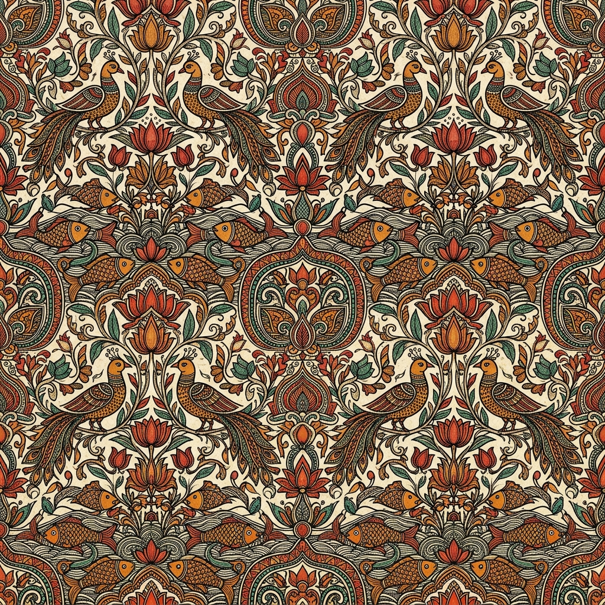

A living document chronicling the sub-continent's artistic lineage. From tribal murals to courtly miniatures, explore the masters who preserve India's soul.
"This registry serves as a bridge between ancient techniques and the modern collector, ensuring that no whisper of history is ever silenced."